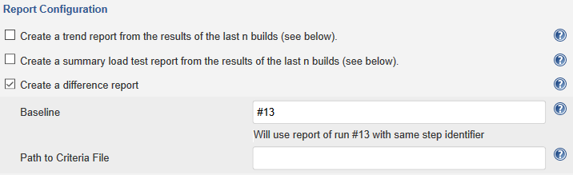

XLT 4.11.2
Load Testing
Always round up when applying load factor (#3207)
The application of a load factor always involves some kind of rounding. This was formerly done by arithmetic rounding which means that users (and arrival rate) were sometimes rounded down and sometimes rounded up depending on the computed value. As a consequence, test cases with a computed value of less than 0.5 were not run at all for the entire period of time the load factor was effective – the full measurement period in the worst case.
To overcome this issue, computed values will now always be rounded up to the smallest integer number that is greater than or equal to the computed value. Hence, users have to explicitly configure a load factor of 0.0 for a certain test case when they want it not to be run.
Increased OS limit for number of open files (#3193)
The underlying OS of our XLT cloud images has been tuned to use an increased limit of 128,000 for the number of open files. Unfortunately, systemd did not apply the OS-wide limits when starting XLT, but used its own settings. This is fixed now.
ENA support for XLT AWS images (#3209)
Starting with XLT 4.11.2, our public AWS images can also be used for instance types of the 5th generation (C5, M5, etc.). These require the boot image to have ENA (Elastic Network Adapter) support enabled which was not the case yet.
Distorted listings in ec2_admin (#3188)
Some time ago, AWS started to transition to a longer ID format. Unfortunately, our tool ec2_admin did not account for this fact when listing AWS images causing distortions. This is fixed now.
Client-Performance Measurements
Wrong timings for requests with the same URL (#3186)
If the same resource (i.e. same URL) is requested multiple times without a page load in between, our client-performance measurement extensions for Chrome and Firefox reported all those requests, however, all of them had the same start time, duration and so on. This is fixed now.
Incorrect handling of raw request body (#3192)
Our client-performance measurement extensions for Chrome and Firefox also attempt to collect the raw request body for POST/PUT/PATCH requests. Unfortunately, this approach did not work reliably and often resulted in a string containing the NUL character ‘\u0000’.
The algorithm used to process the body of a request has been completely rewritten to overcome this issue. It will now attempt to decode the raw body given as byte sequence back to a string if possible, and encode it as base64 string otherwise.
When inspecting the raw body of a request in XLT’s Result Browser, you might notice that some parts start with [base64] or even with [file]. These prefixes indicate that the decoding of this body part has failed and it will thus be transmitted to XLT as base64 string, or that this body part was a file upload. If there is no such prefix, decoding succeeded and resulted in the string shown there.
XLT Jenkins Plugin
Add option to control whether results should be archived (#3175)
Once a load test has completed, its results will automatically be downloaded and stored on the Jenkins master node. This may cause trouble, esp. when running load tests for several hours and the total size of downloaded results grows up to dozens of gigabytes. Hence, we added an option that allows you to control whether or not test results are archived.
Difference report generation on slave nodes (#3169)
Similar to load test reports, difference reports can now be generated on Jenkins slave nodes as well.
Allow user to specify property file as override for mastercontroller.properties (#3160)
Sometimes, it might be necessary to use settings other than those of the configured XLT installation, e.g. default number of agents per agent controller. From now on, you can do so by simply passing the path of the properties file to use as override for the properties defined in mastercontroller.properties.
NotSerializableException thrown when using custom pipeline step ‘xlt’ (#3152)
When using the custom pipeline step ‘xlt’ it might happen that a NotSerializableException was thrown causing the entire build to fail although the execution of the step succeeded. This is fixed now.
Miscellaneous
New SSL certificate for samples app server (#3138)
Posters, the demo application shipped with XLT, is run on a Jetty app server which comes with a self-signed SSL certificate. This certificate might cause trouble with some browsers as it has been issued for a host named jetty.mortbay.com but the server typically runs on your machine, i.e. on localhost. Starting with XLT 4.11.2, the Jetty app server will use an SSL certificate that is issued for localhost and valid to 8/15/2023.
XLT 4.11.1
Framework
Default request headers overwrite request-specific ones (#3148)
When using HtmlUnit as the underlying browser, users have the opportunity to define one or more request headers at the web-client. These headers are called default headers because they are sent with every request made by the web-client. However, request headers set at a particular request always have a higher precedence than the default ones and only those default headers that are missing at the request should be used. Unfortunately, this was not the case. Fixed.
Allow user to turn off event logging for failed requests (#3178)
XLT automatically logs an event for each request that is seen as failed: its response status code is greater than 399 or there is no response at all. This is absolutely fine for most cases. But when load testing a system that is known to return a status code that is seen as failed for certain URLs, the overall number of logged events quickly goes through the roof. This also has a negative impact on the size of both, the raw XLT results and the generated report.
Since XLT 4.11.1, users can use the newly introduced property com.xceptance.xlt.http.requestFailure.logEvent to disable event logging for failed requests.
Client-Performance Measurements
Support First Contentful Paint event (#3153)
Chrome 60 implemented the Paint Timing API which can be used to measure the time of First Paint and First Contentful Paint events. Although XLT’s client-performance WebDriver for Chrome includes support for measuring the time of First Paint events since XLT 4.6.0, support for measuring the time of First Contentful Paint events was missing. Now First Contentful Paint events will be captured as well. They can be found in the Custom Timers section of XLT’s load test report. Similar to First Paint, the name of the most recently started action determines the final name of the measurement. For example, if the most recently started action is named OpenHomepage, the corresponding First Contentful Paint event is measured by the custom timer named OpenHomepage [FirstContentfulPaint].
Since Firefox does not implement the Paint Timing API, XLT’s client-performance WebDriver for Firefox is not capable of measuring and reporting times for First Paint and First Contentful Paint events.
XLT 4.11.0
Test Framework
Improvements for Data-Driven Tests
Run test with a single data set during development – When running a test case with a data sets file attached, the test case will normally be executed multiple times, once for each data set in the file. During test case development or maintenance, where you often need to try and see whether the test is running okay now, this automatic multiplication might become annoying. That’s why you can now annotate the test case with the index of the data set that you would like to use during development:
@DataSetIndex(2) // use the 3rd data set
public class MyTest
{
...
}Don’t forget to remove or comment out this annotation once you are done with maintaining the test case.
Data set support in load tests – When a test case with an attached data set file is part of a load test, XLT will not run it multiple times, but only once. Previously, XLT did even ignore the test data in the data sets file altogether. Hence, you would have to provide default test data in your test case, or otherwise your test case would break. This is not necessary any longer.
From now on, XLT will inject a single data set from your data sets file into your test case. You are in control which data set will be used. By default, the first data set is taken. If the property com.xceptance.xlt.data.dataSets.loadtest.pickRandomDataSet is set to true, the data set is chosen randomly whenever the test is executed. If the annotation @DataSetIndex is present at the test case, the data set matching the specified index is chosen. Note that the annotation takes precedence over the property.
Comment lines in CSV data set files – XLT now supports comment lines in CSV data set files. This is useful not only to add comments, but also to temporarily disable certain data sets without deleting them. The # is the default line comment marker, but you can configure another character if needed:
com.xceptance.xlt.data.dataSetProviders.csv.lineCommentMarker = %Improvements for Java-based Script Test Cases
Mouse coordinates as separate values – Some script command methods require passing a mouse pointer position, i.e. contextMenuAt, mouseDownAt, mouseMoveAt, and mouseUpAt. These methods have got an overloaded version. Previously, you had to specify the mouse position as a single string parameter in the format “x,y”. Now, you can pass the mouse position as separate coordinates as well:
contextMenuAt("css=#foo", "10,20")
contextMenuAt("css=#foo", 10, 20)Helpful stack trace for failed …AndWait commands – If an ...AndWait command fails in Java-based script test cases, the stack trace shown is no longer one of XLT’s internal threads, but the one of the test case thread. This way, it is easier for you to locate the failed command in the test case code.
Other Improvements
Selenium updated – Selenium has been updated to latest available version 3.12.0. Make sure you also update the driver binaries for all the browsers you want to use in your test cases. See below for a list of links to download the driver binary for your browser:
- Chrome/Chromium: chromedriver
- Edge: MicrosoftWebDriver.exe
- Firefox: geckodriver
- Internet Explorer: IEDriverServer.exe
- Opera: operadriver
- PhantomJS: phantomjs
Change the list of items stored in a data provider – The class DataProvider reads test data items from a file, stores them in memory, and returns a randomly chosen item when requested by a test case. Previously, the list of test data items could not be changed during runtime. Now, it is possible to add items to the data provider – or remove items from it, respectively – while the (load) test is still ongoing. For example, if a certain coupon code is no longer applicable, the test case might remove it from the data provider so that it won’t be used any longer.
Transaction runtimes also in dev mode – When running a test case, XLT will store all measurements and other information to the corresponding timers.csv file. However, transaction data was available only when the test case was run in a load test, but not when running it in development mode, i.e. from within your IDE or via a JUnit test framework. From now on, this data is available in any case.
Each execution of a test method results in a separate transaction entry in the appropriate timers.csv file. In case of a data-driven test, you will get one entry per data set as expected. But note that this feature comes with some subtle behavioral changes:
Any method annotated with
@BeforeClassor@AfterClassin your test case won’t be part of the transaction runtime measurement any longer. Likewise, exceptions thrown in of any of these methods will no longer appear intimers.csv.
Please check your existing load test cases if they make use of @BeforeClass / @AfterClass methods. If so, please turn them into @Before / @After methods. This shouldn’t be a breaking change as load test cases can have only one test method anyway. And in that case, it makes no difference if you annotate your before / after methods with @Before / @After or @BeforeClass / @AfterClass.
Load Testing
Success Criteria Validation Tool
In case you do not run your load tests manually but in an automated fashion, you might also want to qualify the results in an automated way. For example, if a load test violates some basic success criteria, then there is probably no use of running further load tests afterwards and you might want the automated process to fail.
To make this possible, you will need two things: a set of formal success criteria according to your requirements and a command-line tool to check them against the load test results. While we cannot really help you with the former, we have provided the latter – XLT now ships with the criteria validation tool check_criteria.sh. This tool basically reads success criteria definitions from a JSON file and applies them to one or more XML files of your choice. The return code of the tool indicates whether or not all success criteria were met.
<xlt>/bin/check_criteria.sh -c success-criteria.json -o validation-results.json <xlt>/reports/20180516-183822/testreport.xmlYou can use the tool with any kind of XLT reports as they all host an XML file with the bare result data in their root directory. These files are named testreport.xml for regular load test reports, diffreport.xml for comparison reports, and trendreport.xml for trend reports.
For more details on how to define success criteria and how to run the tool, see Criteria Validation Tool in the How-To section of the user manual.
XLT Jenkins Plugin
XLT pipeline step returns a result object – Since XLT 4.10, our Jenkins plugin has been able to take part in a pipeline natively. In this release, we have extended the plugin to return all useful result information bundled as a result object so that this data can be evaluated in the pipeline if needed.
def r = xlt stepId: 'any-step-id', xltTemplateDir: '/path/to/xlt'
echo "Run failed: ${r.runFailed} | Report URL: ${r.reportUrl}"Please see the Jenkins How-To for all the details on this result object.
Create a comparison report – Up to now, the plugin offered the option to create a summary report or a trend report based on the results of the last N builds. Now, the plugin may also generate a comparison report that compares the results of the current build with the results of a given baseline build.

Additionally, you may also specify a success criteria definition file to let the comparison report be evaluated automatically. See Success Criteria Validation Tool for more information.